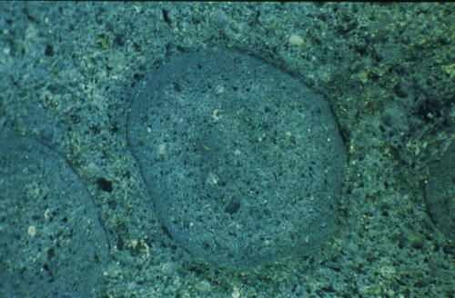
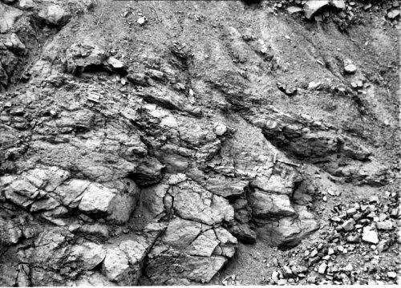
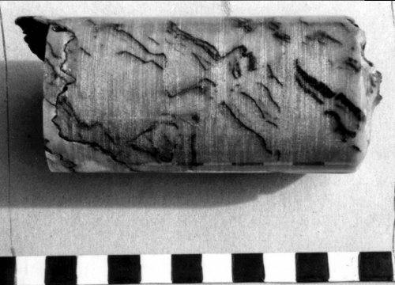
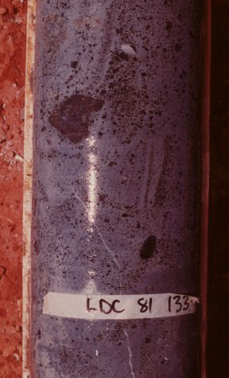
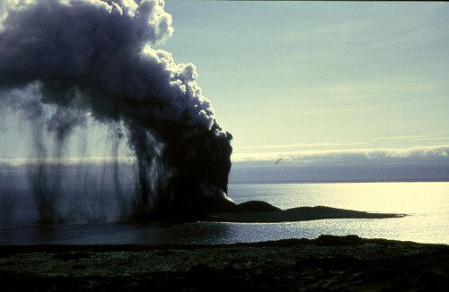

Introduction
Evidence for the Phreatomagmatic Origin of the Argyle Pipe
Summary of Observations at Argyle
Ellendale Lamproite Field
Volcanic Features of the Western District Plains of Victoria
The subject of diamond geology and volcanology is really challenging - on the one side there is the classic De Beers approach of fluidisation and on the other is the phreato-magmatists camp initially led by Dr Volker Lorenz. Both have their applications and I think in reality both styles exist in nature and may occur in the same pipe but at differing times during intrusive events.
Most of my experience relates to the olivine and leucite lamproites of the West and East Kimberley of Western Australia (see also my pages on Argyle and Ellendale). The Argyle pipe is an olivine lamproite diatreme with an age of about 1178 Ma and I will present information below to support the phreatomagmatic origin of the pipe. The West Kimberley lamproites are all relatively new (in Australian geology terms!), with ages of about 20 - 25 Ma, and also show many features illustrating the phreatomagmatic nature of these pipes (I will add a section on Ellendale in the future).
I spent a number of years while working at the Argyle mine looking at the geology and petrography of the pipe. What struck me was the similarity with the phreatomagmatic deposits of basaltic volcanics that had been brought to our attention by Dr Volker Lorenz. Dr Volker Lorenz was consulting for Argyle at the time and brought a wealth of information on basaltic volcanics and the phreatomagmatic process. I visited the Tertiary volcanic deposits of Western Victoria in south eastern Australia, where exposures were examined and photographed. (I hope to be able to put some of these photos on this page in the future – the exposures are excellent).
These deposits in Western Victoria were all terrestrial volcanics that had been erupted on to dry land (in general). Argyle and these deposits show similarities and differences. Phreatomagmatic eruptions occur when hot magma (molten rock) comes into contact with water, either as groundwater, lakes or oceans. The energy released when the water flashes into steam is enormous and very deadly if you happen to be in the immediate area! The results on land are usually big holes in the ground!
After the volcanic activity has subsided the craters tend to be filled with reworked pyroclastics and crater lake sediments, these features are called maars. For more info on these types of features see papers by Lorenz and others, for example see Lorenz 1985 ((Bibliography)) plus numerous other papers since then.
For a discussion of the Argyle pipe see a my paper by Boxer, Lorenz and Smith entitled "The Geology and Volcanology of the Argyle (AK1) Lamproite Diatreme, Western Australia" which was published by the Geological Society of Australia as Special Publication No.14 in 1989. The Special Publication is called Kimberlites and Related Rocks and Volume 1 is concerned with "Their Composition, Occurrence, Origin and Emplacement" of diamondiferous rocks. These are the proceedings of the Fourth International Kimberlite Conference (4thIKC) that was held in Perth, WA in 1986.
Anyway, how about some evidence?
The photograph above was taken in the northern part of the Argyle diatreme and illustrates accretionary lapilli in bedded sandy tuffs (quartzose lapilli ash tuffs). The accretionary lapilli are classic in structure and are very similar to those found in other wet volcanic environments.
Two issues are of importance here, 1. the eruptions have been wet, and 2. the eruptions have to have been subaerial at this time. The photo below shows a close up of the accretionary lapilli seen in drill core.
The other feature, which proves the subaerial nature of the eruptions at the time of formation of the tuffs in the northern part of the diatreme, is the occurrence of drop stones. The photo above nicely shows a drop stone in sandy tuffs from the northern part of the pipe. This photograph is courtesy of Chris Smith (Rio Tinto).
Meanwhile in the central and southern areas of the pipe, a different picture is evident. I logged many kilometres of diamond drill core in an attempt to unravel the internal structure of the pipe. A great deal of work was done but correlation of the internal geology was very limited and only then with gross textural groupings; bedded, ragged or blocky types of textures.
At the northern end of the pipe, there were exposures of sandy tuffs overlain by fine grained sediments (see photo to left), which were interpreted to be crater lake sediments. This would indicate that the northern end of the pipe has exposed the highest levels in the diatreme.
In the northern, an upper parts of the pipe, sandstone dykes cross cut the sandy tuffs. These are interpreted to be clastic dykes formed as water escape features. They are well documented in sandstone sequences (see Lowe 1975). I do not know of any other descriptions of clastic dykes in a volcanic diamond deposit. Other features that indicate water escape features from water saturated volcanoclastics at Argyle include disturbance to bedding and entrainment of fine grained ash. The photo on the left indicated the disturbance of bedding in tuffaceous sandstone that occurs interbedded with the sandy tuffs in the southern part of the Argyle pipe.
The chaotic sandy tuffs at Argyle, which form the majority of the pipe, lack any coherent internal structure that can be traced for any significant distance. The have the appearance of being mixed and may represent lahar type material. They may simply be the result of intense mixing caused by the eruptions in the vent and the abundance of water producing a tuffaceous soup.
The juvenile clasts in the sandy tuffs of the Argyle pipe comprise two main types; blocky” clasts and ragged clasts. Blocky clasts are typically fine grained, non-vesicular (in general) and have a predominance of straight faces.
The ragged clasts are generally light coloured, deformed to wispy in shape and commonly highly vesicular. The photo below shows a section of core comprising ragged tuff.
In thin section, the ragged clasts show clear evidence of deformation, as shown by these two images. The top image is a polished slab of drill core and the other, below, is a thin section showing a ragged clast.
The overall appearance was one of a chaotic mess. A number of petrographic features were relevant to my final interpretation of what had happened in the southern area of the pipe.
1. the sandy tuff, which comprises the economically mineralised material, is a quartzose lapilli ash tuff. The lapilli are olivine lamproite clasts, which are either a massive, fine grained and blocky, type or a flattened vesicular type (fiamme – “ragged tuff”) that occur in a matrix of quartz sand grains and fine grained ash,
2. the occurrence of accretionary lapilli,
3. tuffaceous sandstone dykes cross cutting the tuffs at various angles that appear to be water escape features and due to the dewatering of water saturated volcanoclastic sediments,
4. the quartz sand grains in the matrix of the tuffs are largely single grains or broken single grains. This contrasts with the sand grains in the host rocks, which have been silicified by quartz over-growths.
5. the presence of low-angle cross bedding was suggestive of deposition from high energy base surge volcanic eruptions.
Additional photographs of water escape and other features are in the paper by Boxer et al mentioned above.
All the evidence points to the fact that the Argyle pipe was intruded into a shallow marine environment where there was an abundance of quartz sand and water. It is envisaged that the pipe was emplaced on a shallow shelf and that sand continually poured into the vent during its formation, allowing deep penetration of the sand to great depths in the diatreme.
The water escape features seen in the pipe are represented by sandstone dykes and occur in exactly the same way as sandstone dykes in sandy sediments and are dewatering features. The occurrence of dropstones and accretionary lapilli in the northern part of the diatreme indicated that at later stages in the pipe formation, water flow into the vent was restricted, probably by the formation of a tuff ring around the vent, and that the non-quartzose lapilli ash tuffs (non-sandy tuffs) where probably formed at this time.
At the far northern part of the Argyle pipe, there was an exposure of shales (prior to mining) overlying the quartzose lapilli ash tuffs and probably represents the deposition of crater lake sediments over the top of the vent.
The photo left is how I would have imagined the later stages of the Argyle eruption to look like. This photo was taken by Dr Volker Lorenz of the Surtur eruption near Surtsey in the Atlantic Ocean in 1966.
Note the steam filled eruption cloud and low vent. At Argyle one could image many carats of microdiamonds being scattered by the will of the wind!